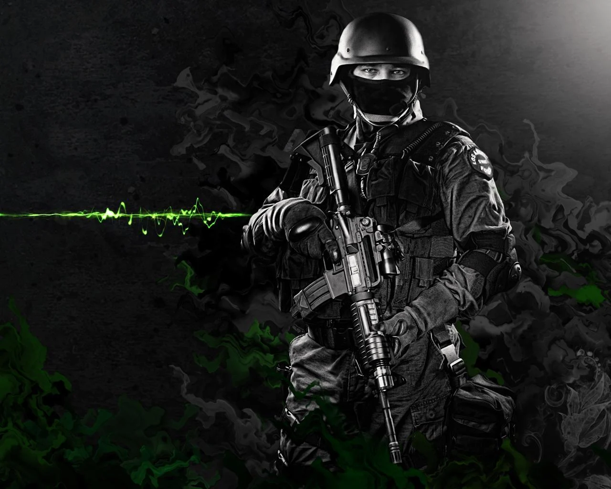
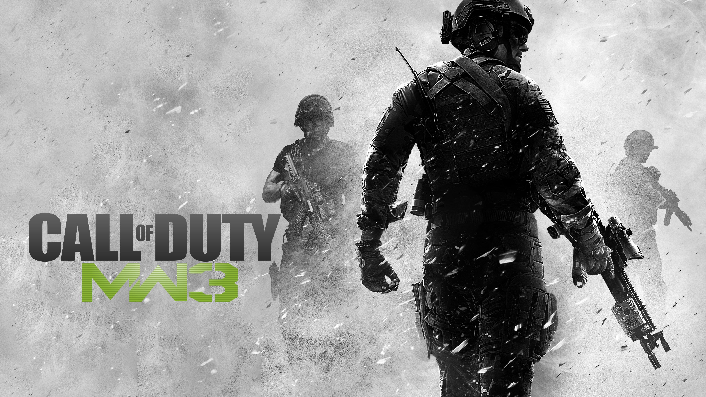

Call of duty foi considerado o melhor jogo de 2022

Originalmente, Mario era carpinteiro, mas, depois dos canos nos quais ele entrava literalmente no famosíssimo jogo Mario Bros, passou a ser considerado encanador.

Call of duty modern warfare promete ser lançado em 2023